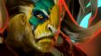
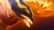
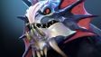
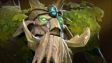
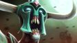

Род Аверно питает купель — разлом в земной тверди, который испускает загадочную энергию на протяжении поколений. Каждого новорожденного семьи окунают в этот темный туман, даруя тем самым связь с их землей и ее загадочной силой. Дети растут с непреклонной верой в защиту семейных ценностей и традиций земли, но на самом деле они охраняют саму купель, истинные намерения которой неизвестны. Когда новорожденный Abaddon проходил обряд крещения, что-то пошло не так. В глазах малыша сверкнула искра разума, испугавшая всех присутствовавших и заставившая жрецов шептаться. Его растили, дабы он пошел по пути всех отпрысков рода: война и защита родины во главе армии. Но сам Abaddon уделял этому не так много внимания. Пока другие тренировались в обращении с оружием, он медитировал у купели. Он глубоко вдыхал темный туман, учась быть единым с той силой, что протекала глубоко под землей его дома. В конечном счете он стал порождением черного тумана. Род Аверно неодобрительно отнесся к такому решению, обвиняя его в пренебрежении обязанностями. Но все эти обвинения прекратились, когда Abaddon вступил в свою первую битву и показал ту обретенную власть над жизнью и смертью, о которой другие члены рода не могли и мечтать.
Abadon
Преданность священной алхимии была традицией рода Темноваров, но никто еще никогда не показывал столько изобретательности, амбиций и безрассудства, сколько проявил юный Раззил. Повзрослев, он оставил семейное дело и решил попробовать себя в производстве золота. Спустя два десятилетия исследований, вложений и подготовок он с треском провалился, попав за решетку за множественные разрушения, причиненные экспериментом. Однако Раззил был не из робкого десятка и тщательно обдумывал варианты побега, чтобы продолжить свои исследования. Когда его новым сокамерником оказался свирепый великан-людоед, алхимик увидел в нем столь желанную возможность для побега. Уговорив гиганта не съедать его, Раззил начал тщательно составлять настойку из плесени и мха, найденных во время исправительных работ. Через неделю она созрела. Когда великан выпил зелье, он впал в ослепительную ярость, разорвал железные прутья, разнес стены и перебил всю стражу. Скоро они затерялись где-то в лесу, окружавшем город. Когда действие тоника отошло, людоед чувствовал себя вполне хорошо и выглядел счастливым и вполне энергичным. Решив работать вместе, с тех пор парочка собирает материалы, необходимые Раззилу, чтобы в очередной раз попытать удачу.
Alchemist

Еще будучи рядовым бугаем в армии Красного тумана, Могул Хан мечтал о звании генерала Красного тумана. Битву за битвой он самыми кровавыми способами доказывал собственное превосходство. Его стремительному взлету по карьерной лестнице не раз способствовало то обстоятельство, что ему ничего не стоило обезглавить своего начальника. Во время семилетней кампании на Тысячеболотье он отличился в кровопролитных бойнях, а звезда его славы засияла еще ярче, в то время как число его соратников неизменно сокращалось. В ночь величайшей победы он провозгласил себя генералом Красного тумана и взял себе высший титул — Axe. Однако в его отряде теперь не значилось ни одного воина. Много бойцов были повержены врагом, но и от лезвия Axe погибло ничуть не меньше. Стоит ли говорить, что большинство солдат ни за что не переманить под его знамена? Но Axe это нисколько не смущает, ведь он знает, что в бою можно положиться только на самого себя.
Axe

Детство Карроха прошло несладко. Мать его умерла при родах. Отца, кузнеца при последнем короле Слома, казнили, растоптав насмерть, когда ребенку было пять лет. Тогда Карроха поселили в королевский зверинец, где он рос среди животных из королевского зверинца: львов, обезьян, оленей-падунов и других, менее известных существ, в которых не всякий верил. На седьмой год жизни парня королевский лазутчик привел во дворец новую тварь. Ее подтащили к королю, закованную в цепи, и та заговорила, хоть и не двигала ртом. Просила она об одном: свободе. Король лишь рассмеялся и приказал зверю выступать ему на потеху, а когда тот отказался, огрел его своим Диким скипетром и приказал отправить тварь в темницу. Следующие месяцы мальчик тайком проносил к существу еду и лекарства, но они лишь слегка отодвигали полное истощение. Без слов зверь говорил с мальчиком, и со временем их связь усилилась настолько, что Каррох понял — он может поддерживать разговор. Более того, он научился общаться со всеми обитателями королевского зверинца. В ночь, когда зверь умер, мальчик впал в ярость. Он повел чудищ войной на прислужников короля, отперев клетки и выпустив зверей на дворцовые земли. В погроме был насмерть закусан, заклеван и зацарапан и сам последний король. Пока царила неразбериха, Каррох освободил одного из королевских оленей, и тот поклонился в ответ, а затем, с Каррохом на спине, перемахнул через высокие стены дворца, унося того из проклятого места. Теперь повелитель зверей Каррох по прозвищу Beastmaster уже взрослый мужчина, но он не потерял способности говорить с дикими зверьми. Сирота из королевского зверинца превратился в неукротимого воина природы.
Beastmaster

Глубоко в Скулящих горах, в долине, что под Разрушенным городом, древний орден Ойо веками практиковал свои ритуалы священного помутнения, соединяясь с миром духов посредством грандиозных хмельных праздников. Рожденный плотской матерью от отца-небожителя, молодой Мангикс стал первым, кто совместил в себе таланты обеих линий. Он занимался с величайшими эстетами Ордена, со временем заполучив с прилежной верностью к напиткам право соревноваться за титул Хмелевара — высшего звания во всей спиртотворческой касте. Девять дней Мангикс сражался и пил до последнего, — оба аспекта были одинаково важны — стараясь одолеть и перепить старшего мастера. Девять ночей они шатались и крутились, спотыкались и наносили удар за ударом — и так до тех пор, пока воин постарше наконец не свалился на землю в пьяном ступоре, и его соперник был наречен новым Хмелеваром. Теперь новый, молодой Хмелевар взывает к силе предков Ойо, дабы те дали ему скорость в обращении с посохом. К своим предкам-небожителям он взывает, когда пользуется магией. И, подобно всем предыдущим Хмелеварам его родины, его послали путешествовать по миру с единственной целью. В бродяжничестве он постигает просвещение сквозь принятие алкоголя, пребывая в постоянных поисках ответа на древнюю духовную загадку; пытаясь надумать ту самую мысль, которая вновь воссоединит духовный и материальный миры.
Brewmaster

Ригварл никогда не уходил от драк и не поворачивался спиной к противнику, даже если тот был крупнее и сильнее его. Окрещенный пьяными толпами как Bristleback, он стал постоянным участником подпольных боев, что проводились в тавернах на тракте между Сломом и Эльзе. Однажды умелого бойца заприметил один трактирщик, искавший вышибалу в бар. За скромную выпивку он стал собирать с посетителей плату, следить за порядком и время от времени ломать конечности особо несговорчивым клиентам (а одному членистоногому бедняге однажды сломал целых пять). Но все же Ригварлу довелось встретить бойца, равного себе. Однажды во время очередной вечерней вахты, уже будучи навеселе от хмеля, он подошел за платой к одному кряжистому детине с севера и заплетающимся языком пробормотал: «Что-то не нравятся мне ваши бивни, уважаемый». Что тут началось! Это было побоище века! В бой бросилось с дюжину посетителей. Не уцелел ни один стул. Хотя Ригварл изрядно приложился к буянам, но и сам в полной мере схлопотал по печени. И все бы ничего, но случилось нечто страшное — клиент ушел, не заплатив за выпивку. За несколько недель раны вышибалы затянулись, а вырванные иглы отросли, но удар по чести был нанесен непростительный. Счет он оплатил из своего кармана, поклявшись выследить северянина и взыскать плату по полной. После этого он занялся тренировками, чего не делал никогда ранее, и неожиданно для себя сделал поразительное открытие. Расправив иглы и усмехнувшись сквозь зубы, он понял — иногда все же стоит показывать противнику спину.
Bristleback

Говорят, что жизненный путь кентавра вымощен телами павших. Если это так, то для кентавра по имени Warrunner этот путь был действительно длинным. Многие чужестранцы, повстречав четырехногих воинов из кланов Друуда, зачастую ошибочно принимают их за простоватых громил. У их языка нет письменной формы, культура бедна на графические символы; в музыке нет четкой структуры, а в религии — строгих правил и догм. У кентавров лучшее проявление своих мыслей и чувств — это битва. Это самовыражение в чистом виде. И если убийство среди кентавров считается искусством, то самый талантливый из их творцов — Брэдводен. Свою несокрушимую мощь он взрастил на землях Омекса, на древней арене, где тысячелетиями кланы кентавров собирались, чтобы провести гладиаторские церемонии. И чем дальше распространялась слава о нем, тем все больше зрителей со всего света прибывали, чтобы увидеть великого кентавра в действии. Всегда выходя на арену первым и уходя последним, он создавал шедевры каждым брызгом крови, каждым взмахом лезвия. Такова его поэзия крови и стали, сложный узор на бледных песках бойни. Warrunner побеждал до тех пор, пока арена не взрывалась выкриками его имени — он стал непобедимым чемпионом. Ему был вручен великий пояс Омекса, но в победе ощущалась лишь пустота. Каков же воин без постоянного вызова? Великий кентавр ускакал из Омекса в тот же день с новой целью. Для своего народа Warrunner — это величайший воин, который ступал на арену. Теперь Warrunner стремится доказать, что он — лучший воин, когда-либо живший.
Centaur Warrunner

Ветеран бесчисленных сражений Chaos Knight появился в далеком мире, где фундаментальные законы вселенной обрели разумное воплощение. Из древних Предвечных он самый старший и неугомонный, и цель его — найти того, кого сам знает лишь под именем Свет. Давным-давно Свет покинул прародительский мир, нарушив этим первое соглашение. И теперь Chaos Knight путешествует из мира в мир в бесконечной охоте на Свет, пытаясь затушить его везде, где он объявится. Тысячу раз задувался источник, и всякий раз он ускользал в другое измерение, из-за чего Chaos Knight начинал поиск заново. Он едет верхом на Армаггедоне, яростно вступает в битвы, получая свою силу из хаоса во вселенной. Он — физическое воплощение самого хаоса. При необходимости он способен призвать иные версии себя из других миров. Вместе темные наездники мчатся в битву, непреодолимые, как стихия. Поиск будет окончен, только когда последний Свет во вселенной погаснет. Где скачет Chaos Knight, вскоре будет смерть.
Chaos Knight

Ратлтрап — выходец из того же смышленого народца, что и Sniper и Tinker, и он также компенсирует свою низкорослость механическими приспособлениями и хитростью ума. Сын часовщика, Ратлтрап много лет учился ремеслу отца — до тех пор, пока война не сошла с гор и не унесла из равнинных поселений мирные профессии. «Теперь твое ремесло — война», — сказал ему умирающий отец, пока деревня их прадедов дымилась, обугленная и сожженная. Плох тот ремесленник, который винит инструменты, и Ратлтрап был не из тех, что придумывал отговорки. Похоронив отца в руинах деревни, он устремился превратить себя в величайший инструмент войны всех миров и времен. Он поклялся, что его больше никогда не застанут врасплох — и соорудил, используя свои знания, механические доспехи, в сравнении с которыми снаряжение иноземцев было подобно консервным банкам. Теперь Ратлтрап живет вместе со своими устройствами — некрупный, но смертоносный воин, разрушение и засада для которого стали способностями, работающими почти автоматически и точно, как часовой механизм. Механик смерти, он быстро кончает жизнь неподготовленных противников с помощью своих творений и несет с собой новый век военной экипировки. Который час? Час Clockwerk!
Clockwerk

Он — тот, кто горит, но не сгорает, пожирает, но не насыщается, убивает, но остается безнаказанным. Он — Люцифер, вершащий судьбы всех тех, кто осмелится встать у него на пути. И несмотря на то, что сейчас он пожинает души адским пламенем своего клинка, Люцифер является падшим ангелом. Даже будучи ранее послушным генералом из вселенной за гранью света, он не пал на колени и был обвинен в страшном грехе — неповиновении. Шесть раз его имя пробили в великий колокол Вашундола. Шестьдесят шесть раз его крылья предавали огню, пока от них не осталось ничего, кроме обугленных лопаток. Без крыльев он сорвался с тросов, что держали его в свете, и с душераздирающим криком пал оземь. Кратер в пустыне, образовавшийся от падения, назвали Потерянным Раем. Теперь Люцифер сражается без пощады и весомого повода. Движимый необъяснимой мотивацией, приправленный невероятными талантами, вершитель судеб всегда несет с собой свой собственный ад, сопровождающий его повсюду. Он — чистая дерзость, и когда-нибудь этот мир будет принадлежать ему.
Doom

Много лет рыцарь Дэйвион выслеживал легендарного древнего дракона, но когда наконец предстал перед своим врагом, страшно разочаровался: ужасающий Слайрак состарился и ослабел, его крылья были потрепаны, плоть прогнила, клыки отупели, а огненное дыхание было не страшнее коробка отсыревших спичек. Не видя чести в его убийстве, молодой рыцарь хотел уйти и позволить старому врагу спокойно умереть. Но в его мысли проник голос: Слайрак прошептал, что рыцарь окажет ему честь, позволив умереть в бою. Рыцарь согласился, и был вознагражден за проявленное милосердие: как только он вонзил свой меч в грудь дракона, тот воткнул свой коготь ему в горло. Когда их кровь смешалась, Слайрак передал ему свою стойкость и мудрость веков. Смерть дракона скрепила их союз. Так и родился Dragon Knight. Древние силы дремлют в рыцаре, просыпаясь, когда он зовет их себе на помощь; или, возможно, это дракон взывает к рыцарю…
Dragon Knight
Среди скал и возвышенностей Скулящих гор есть заброшенный добытчиками руды разрез, из которого добывался священный нефрит. Из этого редкого материала одним умельцем было вырезана статуя великого генерала Каолина, главнокомандующего погибшей десятитысячной армии. Солдаты и священники, шуты и акробаты — все были похоронены под землей долгие тысячелетия с изваянием великого генерала во главе. Но ремесленник-умелец не мог знать, что в разрезе обитает дух земли — природной силы, находившейся в единстве с планетой. Когда нефрит впитал эту силу, копившуюся долгие века, статуя ожила и проложила себе путь на поверхность. Теперь перерожденный Каолин, или Earth Spirit, путешествует по дорогам Скулящих гор, борясь во имя духа земли, при необходимости призывая остатки великой армии, до сих пор находящейся в объятиях земляной толщи.
Earth Spirit

Словно голем или гаргулья, Earthshaker когда-то был един с землей, но сейчас он свободно ступает по ней. В отличие от других, он создал себя своей волей и никому не служит. В беспокойных снах, заключенный глубоко в камне, он узнал, что жизнь проходит над ним. Он вырос любознательным. Во время землетрясений пик горы Ишай стряхивал с себя рыхлые лавины, меняя течение рек и превращая равнины в бездонные разломы. Когда, наконец, земля перестала дрожать, из оседающей пыли, разбрасывая тяжелые валуны как какие-то тряпки, вышел Earthshaker. Он сделал себя похожим на смертную тварь и назвался Рейгором Каменное Копыто. В его венах течет кровь, а в легких проходит воздух, а это значит, что теперь он смертен. Но дух его всё еще связан с землей. Он несет ее силу в магическом тотеме, который всегда с ним. И в день, когда он обратится в пыль, земля примет его как своего блудного сына.
Earthshaker

Вы наверняка задавались вопросом: как этот мир стал таким, какой он есть? Почему среди всех миров именно этот такой странной формы, населен такими разношерстными пестрыми существами со столь богатой культурой и историей? «Ответ, — раздается шепот, — знают Титаны». Они существовали с начала времен, и если даже не созерцали создание сущего, то с рождения помнят его эхо. Клейменные самыми ранними силами вселенной, они не желали ничего иного, кроме как продолжать созидание самостоятельно. Они решили изменять материю по своему разумению: ударяя, нагревая, изгибая и рызрывая ее. И когда материя стала для них слишком простой, они стали изменять сами себя и друг друга. Обостряя ум и перековывая дух, они достигли небывалого могущества. Новой целью стала переделка самой реальности. Но тут они иногда совершали ошибки — большие амбиции давали знать свое. Тот, кого зовут Elder Titan, был большим выдумщиком, постигшим искусство творения. Оттачивая мастерство, он случайно поколебал то, что уже было нельзя восстановить. Он провалился в изломанный мир — осколок собственной души. Там, среди зубчатых разломов, треснутых равнин, и других осколков, провалившихся через трещины раннего мира, он и пребывал. Именно поэтому мир, каким мы его знаем, напоминает горстку выживших в кораблекрушении, про которое все давно забыли. Забыли все, кроме одного, который винит себя. Целую вечность он безустанно ищет способ всё исправить, собрать воедино свою расколотую душу, часть которой может быть в каждом из нас. Именно его мы зовем Elder Titan.
Elder Titan

Порожденный агонией священного мира Нотл, первым, что увидел Huskar, открыв глаза, был одаренный жрец теней Dazzle, накладывающий на него таинственное заклинание. Вопреки древним обрядам ордена Дезун, душа Huskar была спасена от вечности, но, как и все, побывавшие в мире Нотл, он необратимо изменился. Более неподвластная смертной плоти, его собственная кровь обратилась в источник невообразимой силы, каждая пролитая капля с лихвой возвращалась лютой, горящей энергией. Однако этот новообретенный дар привел в ярость Huskar, ведь спасением из Нотла Dazzle лишил его места среди богов. Он был лишен собственного священного жертвоприношения. Со временем старейшины ордена собрались увеличить свое влияние и решили, что Huskar станет устрашающим средством в их кампании. Однако перспектива стать лишь орудием ордена, что отказал ему родовых правах, повергла его в еще большее уныние. Как только на горизонте возникли первые огни восходящей войны, он покинул отчий дом, чтобы найти новых союзников и достойный повод выпустить наружу силу, которую способно дать его абсолютное самопожертвование.
Huskar

Io везде и во всём. Для врагов это великий разрушитель, для ученых мужей — блеск божественного ока. Этот непостижимый сгусток жизненной силы находится одновременно на всех уровнях бытия, а малейшие фракции его сущности воплощаются в физическом мире в каждое отдельно взятое мгновение времени. Подобно великим близнецам-всадникам, Тьме и Свету, Io — древний путник, чье истинное происхождение затеряно в веках, Предвечный вселенной, сила, что старше самого времени, пришелец из миров за пределами понимания смертных. Io — не что иное как совокупность всех сил притяжения и отторжения в материальном поле, разумное проявление заряда, удерживающего сущее вместе. Присутствие Io в материальном мире фиксируется только в контролируемых искривлениях векторов этих сил. Будучи благожелательным по своей природе, Io может связываться с союзниками и передавать по энергетическому каналу свои непостижимые магнетические силы, делая их сильнее и выносливее. Никому не ведомы ни его мотивы, ни истинная мощь. Io — гость в физическом мире, напоминающий, что вселенная полна загадок и тайн.
Io

Адмирала могущественного кладдского флота Kunkka послали защищать острова своей родины, когда демоны Катаракты решили нанести решительный удар по землям людей. Начались годы нерешительных диверсионных вылазок и тщетных масштабных нападений. В конце концов флот демонов направили всю свою эскадру к Дрожащему острову. В отчаянии маги-фаталисты Кладда провели свой последний ритуал — и тысячи древних духов явились, дабы защитить флот. Но даже это с трудом можно было назвать преимуществом в борьбе с флотом демонов. Пока кладдские корабли тонули один за другим, адмирал отдувался на вражеских — топя судна древней магией. Однако в разгаре битвы между людьми, демонами и призраками далекого прошлого что-то, должно быть, пробудило четвертую силу. Вокруг немногих целых кораблей в воздух взмыли гигантские волны цунами, и в сердце боя явился Мэльрон Щупальцеликий. Его склизкие конечности бросали корабли в разные стороны, разбивая кладдские фрегаты о судна Катаракты. Никто не может точно сказать, что же произошло в гуще того столкновения. Катаракта с демоническими воплями затянудась обратно в пустоту, брошенная своими обитателями. Kunkka стал адмиралом, чей флот — единственное судно, которое бесконечно повторяет последние секунды своей жизни. Но пережил ли ту бурю сам Kunkka, или на поле боя выходит лишь его дух? Этого не знает даже Tidehunter — тот, кто и призвал Мэльрона в пучине боя.
Kunkka

Они пришли без предупреждения. Внутри городских стен Стоунхолла вдруг раздался ужасный грохот. Из бывшей когда-то могучей армии Стоунхолла лишь Бронзовый легион под руководством Главнокомандующей Тресдин находился рядом и смог ответить на вызов. Они въехали в город, сражаясь в окровавленных переулках и возле пылающих рынков, прорубая свой путь к источнику внезапного вторжения — пространственному расколу на главной площади, на краю которого бушевал лидер войск тьмы. Охваченный губительным блеском, он взмахивал своим гигантским клинком, рассекая воинов напополам, и плоть его жертв уже начинала разлагаться. Тресдин подняла свой окровавленный меч и взглянула на чудовище. Оно обернулось, обнажив в улыбке массу клыков. Забыв о битве, бушующей вокруг, они бросились навстречу друг другу. Отражая один выпад за другим, пара танцевала в смертельном поединке, пока солдаты Бронзового легиона терпели сокрушительное поражение. Тресдин прыгнула навстречу монстру, а тот занес клинок для решающего удара. Внезапно сильнейший удар сбоку заставил Тресдин покачнуться, но она собрала свои силы для ответного выпада. Клинок ударился о клинок, вошел по рукоять в кривую лапу, разорвав ее надвое, разбрызгивая ужасающую смесь искр и крови. Подлые твари ошеломленно смотрели на битву, а Тресдин лишь усиливала нападение, вонзая меч все глубже, прямо к бьющемуся в панике сердцу чудовища. Раздался жуткий вой, донесшийся до самых облаков, и монстр взорвался потоком крови и страдания. Адский портал заколебался. Сила, питающая его, исчезла также внезапно, как и появилась. Оставшиеся враги пали под напором стали Стоунхолла. Победу не было смысла праздновать: город лежал в руинах, выживших осталось совсем немного. Пожар продолжал полыхать. Развернув свои знамена, Тресдин собрала уцелевших союзников. В гневе она дала клятву отомстить силам бездны, и обречен будет тот, кто встанет на ее пути.
Legion Commander

В подземной темнице Деварка томился закованный в кандалы мстительный маг, замышляющий побег. Его кинули в одну камеру с бесконечно бормочущим существом по имени Н'эйкс - когда-то он был вором, которому Черствым Советом была назначена мера пресечения в форме вечной жизни и пожизненного заключения одновременно, дабы неповадно было воровать и обманывать. За долгие годы заключения цепи заключенного проржавели насквозь - как и его мозг; Н'эйкс уже не помнил, кем он был раньше, что он тут делает, кто эти люди и почему он заперт в камере, и даже потерял желание выбраться из тюрьмы. В нем волшебник увидел идеального исполнителя своих планов - и, применив заклинание Заражения, внедрился в тело Н'эйкса, надеясь расшевелить страшное существо, в которое превратился вор, и заставить его пройтись по подземельям кровавым ураганом ярости и разрушения, пока сам маг тихо и мирно затерялся бы в суете и сбежал. Только вот сила встреченного им в Н'эйксе безумия была так велика, что воля мага сломилась, и разум его улетел куда-то далеко-далеко в океан сумасшествия. А вот Н'эйкс, которого растолкала от тысячелетий безумного бездействия внезапная инъекция новой жизни, пробудился и подчинился бесплотному голосу у себя в черепной коробке, который повторял лишь одно слово: «Сбежать». В тот момент родилось то, что теперь называют Lifestealer. Волны безумия, исходившие от существа, разнесли сознания стражников на маленькие кусочки, и те сами разорвали друг друга, открыв двери темницы. Lifestealer же, сбежав из подземелья, оставил проржавевшие кандалы на себе как напоминание о том, что никто больше не посмеет ограничить его свободу - но до сих пор он остается узником. В расхристанном и извращенном существе живут две личности - безымянный, хитрый, злобный вор и Хозяин, чьему голосу вор подчиняется. Или он притворяется?
Lifestealer
Бейнхаллоу с рождения принадлежал благородному дому Эмбри, могущественнейшему из всех землевладельческих родов королевства Слом. Еще до того, как свершилось Падение, дом Эмбри первым восстал против ненасытного короля, чьи желания становились всё страннее и страннее, а двор его заполонили колдуны и шарлатаны. Не желая больше платить вассальские залоги, Эмбри послали в столицу шеститысячную армию, но ее перерезали в сражении, названным позже «Бойней отступников». Тогда старое выражение показало свою настоящую шкуру: когда метишь в шею королю, лучше рубить сразу всю голову. Разъяренный свершившимся предательством, король истребил всякого живущего Эмбри, оставив жизнь лишь лорду и его младшему сыну, Бейнхаллоу. Опозоренный лорд был прикован к узорчатому мраморному полу королевской залы, и монарх приказал своим волшебникам превратить мальчика в волка, чтобы тот разодрал глотку своему же отцу. «Сделайте это, — сказал король, — чтобы Лорд Эмбри осознал, как остры зубы предательства». Были призваны сильнейшие магические силы, и тело ребенка исказилось. Однако в то время как тело Бейнхаллоу больше не было человеческим, его душа осталась на месте — и вместо того, чтобы разодрать шею беззащитного отца, он набросился на прислугу монарха. Прежде чем волка наконец-то смогли выгнать из замка, далеко в ночь, он разорвал на клочки дюжину королевских рыцарей. Лорд Эмбри, всё еще в кандалах, смеялся, даже когда его тело пронзил королевский меч. Теперь же Бейнхаллоу — наследник потерянного дома Эмбри, бродящий по миру под именем Lycan. Наполовину воин, наполовину волк, он ищет возмездия за всё то, что потерял.
Lycan

Лишь в одном было согласие между лучшими кузнецами горы Йорлак — в том, что рог магнорога есть драгоценнейший из всех материалов. Острейший и наибольший из них принадлежит зверю, которого они прозвали «Magnus». Он с легкостью пронзал своим рогом еще их отцов, пытавшихся заполучить главные сокровища его рода. Изо дня в день он возвращался в свою пещеру с побагровевшими от крови копытами и рогом, до тех пор, пока родоначальница не призвала его и весь его род уйти из пещер и искать покоя на севере, притаившись в тени горы. Magnus лишь усмехнулся, ведь он всегда справлялся с защитой своего народа. Он решил, что племя останется, ведь магнороги не верят в случайности… и не меняют своих решений. Однако, когда произошло внезапное извержение горы Йорлак, обратившее половину рода в пламя и пепел, Magnus все же решился изменить свою волю. Выжившие шли на север, пока не встретили на своем пути заставу с сотней воинов, вооруженных луками и закаленной сталью. Меньшего Magnus и не ожидал. Он повел своих самых свирепых братьев и сестер в битву с яростью, сравнимой лишь с огнедышащей горой, что он оставил позади. В это время старейшины, матери и телята магнорогов один за другим исчезали в оползнях. О дальнейшем ходе событий кузнецы спорят до сих пор. Одни говорят, что Magnus воссоздал свой род, а другие — что он не пережил побоища, умерев от смертельных ранений у бездыханного тела его родоначальницы. Но ни те, ни другие не правы. Magnus поклялся, что вернется в свое племя… но лишь когда последний из виновников извержения горы Йорлак узрит свою смерть от его могучего рога. Ведь магнороги не верят в случайности.
Magnus

О Night Stalker нет никаких документальных свидетельств — лишь мифы и истории. В древних рассказах каждой расы любого мира есть история о невообразимом времени, что было еще до появления солнца и понятия дня, когда над землей стояла бесконечная ночь, в которой жили создания тьмы. И, как гласят те истории, на рассвете первого дня все твари ночи погибли. Но одно существо выжило. Воплощение зла, Баланар упивается своей жестокостью. Он послужил прообразом разнообразных бабаек, кощеев и прочих сущностей, которыми пугают непослушных детей. Роль пугала доставляет ему удовольствие — но Баланар не просто страшила для малолетних непосед. Под покровом ночи он разрывает на части тех, кто отбился от света, свернул с дороги или проигнорировал предупреждения своих друзей, уходя в ночь. Night Stalker — живое доказательство того, что когда ребенок боится спать в темной комнате… он во многом прав.
Night Stalker

Ревнитель Громобой с раннего детства служил ордену, посвятившему себя подвигам во имя Всезнания. Прожив так много лет, он, будучи праведно верящим в свое дело, не раз отправлявшимся в далекие края рыцарем, никогда не ставил свою веру под вопрос — их дело было правым, а кто был не с ними — тот был против них. В самом начале его, и без того готового на подвиги, подстегивали юношеский кураж и молодость. Однако шли долгие годы крестовых походов, и вот сходили в могилы на краю дорог те, на службу к которым он когда-то поступал; вот один за одним пали в бою с жуткими, злыми сущностями, не признающими Всезнание, его братья по оружию, вместе с которыми он в детстве оказался в ордене; вот погибали его же собственные оруженосцы во многочисленных засадах, под натиском ужасных погодных условий далеких стран, от всевозможных болезней... Так, шаг за шагом, Громобой потерял былую уверенность в своих клятвах — и во всем их крестовом походе. Отколовшись от военных сил ордена, он отправился обратно в Эмарак, город на утесах, знаменитый своим пещерным храмом, где и находились жрецы Всезнания. Ревнитель нашел их и бросил вызов. Никто прежде не смел высказывать подобной наглости, и Громобоя поначалу пытались сбросить с утеса для жертвоприношений, но сколько бы человек на него не набрасывались и какие бы заклинания на него не обрушали — его так и не удавалось сдвинуть с места. И пролился на стойкую фигуру воина небесный свет — тогда служители храма поняли, что Всезнание избрало его, чтобы открыться. Отойдя прочь от избранного, они пропустили старейшину, чтобы тот открыл Ревнителю дверь в их святая святых, где хранились не свитки древней мудрости, не легендарные реликвии, в которые надо было для начала самому поверить, а туда, где находился тот, кто испокон веков жил внутри скалы — более того, тот, кто сам создал эту скалу бесчисленное множество лет назад, чтобы защититься от опасностей внешнего мира. По легенде, именно так мир был создан Всезнанием. Тогда рыцарь всё осознал. У него не было более никакой причины сомневаться в истинности веры. Быть может, Всезнание и не было никаким создателем мира, но оно было реально. Теперь поход паладина имел смысл. За его целительными способностями и воинской храбростью стоят реальные силы, а не какие-то выдумки.
Omniknight

Первому солнцу Хранителя, единственной точке разумного света в изначальной тьме, было предначертано принести тепло в холодную пустоту. В течение тысячелетий этот ослепительный луч концентрировал свою неизмеримую энергию, что привело к разрушительному взрыву сверхновой звезды. Из этого огня появились новые лучи, звездные копии своего родителя, которые также устремились в океан тьмы и стали созвездиями. Со временем и они стали сверхновыми, порождая новый свет. Так продолжался цикл рождения и перерождения, пока всё небо, созданное Титанами, не стало мерцать и сиять. В результате такого беспощадного и древнего процесса сформировалась звезда, известная смертным как Phoenix. Как и ее предки, она была выброшена в безграничный космос, чтобы найти свое место среди небесных братьев и сестер. Но любопытство к тому, что согревают гаснущие предки, захватило молодую птицу, и в течение долгих лет она познавала мир. Она узнала, что среди целых и разрушенных миров скоро образуется замкнутый центр, в котором всевозможные силы сойдутся в конфликте, несущим вселенское значение. И этому миру потребуется нечто большее, чем просто далекие лучи умирающего солнца. Итак, звездное дитя приняло свою земную форму, чтобы нести свет всем нуждающимся и, возможно, исполнить свою звездную судьбу.
Phoenix

На полях Вечной бойни, далеко на юге от Квойджа, тучная фигура упорно трудится под покровом ночи — убирает, а затем расчленяет, потрошит, сгружает в кучи конечности и внутренние органы павших. И все это лишь для того, чтобы на следующее утро бойня могла повториться. В том проклятом мире ничто не разлагается само по себе — мертвецам никогда не суждено вернуться обратно в землю, и не важно, насколько глубока могила. Окруженный стаями птиц-падальщиков, которым нужны порезанные кусочки трупов, мясник Pudge упражняется с лезвиями, которые затачиваются от резки трупов. Вжик-вжик-тух. Плоть отсекается от костей, связки и сухожилия отрываются как кусочки мокрой бумаги. И хоть у Pudge всегда было пристрастие к мясницкому ремеслу, со временем тучный здоровяк полюбил и то, что получается, когда он заканчивает работу над трупом. Сначала кусочек мускула там, глоточек крови... Вскоре Pudge уже вгрызался в тела самых крепких существ подобно грызущей кость собаке. Даже те, кто не питает страха перед жнецом Смерти, предпочитают не связываться с мясником.
Pudge

Пески Искрящейся пустыни живые и обладают разумом — огромная пустыня говорит сама с собой, размышляя о том, что многие могут только вообразить. Но когда ей нужно найти способ выйти за свои границы, она освобождает частичку себя и наполняет ей магическую броню, созданную калдинскими джиннами. Это создание называет себя Криксалис, что означает «сердце песка», но другие знают его как Sand King. Sand King принимает форму огромного скорпиона, вдохновленный маленькими, но вездесущими обитателями Искрящейся пустыни; и это настоящее выражение его беспощадного характера. Страж, воин, вестник — всё это обязанности Sand King, неразделимого с пустыней, которая дала ему жизнь.
Sand King

Slardar — змееногий страж, один из обитателей глубин, хранитель обширной сети затопленных городов и их древних богатств. В беспросветных заливах океанских глубин он блюдет покой запрятанных сокровищ, не давая проходу подводным ворам, посланным на морское дно корыстолюбивыми волшебниками с поверхности. Страж верен своей службе как никто, а его молчаливость скрывает знание всех тайных морских проходов. Несмотря на боль от яркого света, он то и дело поднимается к поверхности, чтобы разведать, не собирается ли кто в очередную экспедицию за богатствами морского дна, а иногда и для расправы над теми немногими, что всё же выкрали что-то из затопленной сокровищницы. Проведенное под огромным давлением морской толщи время сделало из змееногого стража существо невероятной мощи.
Slardar

Spirit Breaker, носящий имя Баратрум — гордое и могущественное существо, состоящее из жестокости и чистого интеллекта, решившее проскользнуть в наш физический мир, чтобы принять участие в событиях, которые могут оставить свой след на стихийной вселенной — его родине. Для этого Баратрум собрал себе тело, которое могло бы служить ему как в нашем мире, так и за его гранью. Его физическая оболочка берет силы нашей вселенной, объединяя в себе формы быка и обезьяны — с рогами, копытами и руками, являющимися символами таких его качеств, как сила, скорость и ловкость. Он носит кольцо в носу как напоминание о том, что должен служить своему тайному учителю, и о том, что мир, с которым он имеет дело, является лишь тенью настоящего бытия
Spirit Breaker

Sven — внебрачный сын вигильского рыцаря, урожденный бледный меранс, взращенный в руинах Тенистого взморья. Его отца казнили за нарушение Вигильского кодекса, а мать отвергло ее дикое племя, поэтому Sven считает, что честь следует искать не в обществе, но в себе. Когда из жизни ушла мать, о которой Sven заботился до самой ее смерти, он отправился на службу вигильским рыцарям, не раскрывая своей личности. На протяжении тринадцати лет он учился в школе своего отца, постигая суровый закон, который объявлял само его существование мерзостью. И вот, в день, когда Sven должен был принести присягу, он завладел Клинком изгоя, разбил Священный шлем и сжег кодекс в священном вигильском пламени. Он покинул вигильскую цитадель, навсегда одинокий, строго следующий своим личным законам до последней руны. Да, он рыцарь… но рыцарь мятежный.
Sven

Tidehunter, также известный как Левиафан — могучий защитник Затонувших островов; понять его намерения не в силах ни одна живая душа. К примеру, мы все знаем о том, как важен контроль над крупными морскими маршрутами, и о том, как резко может измениться экономическая ситуация империи, контролирующей тот или иной пролив. Но что вам известно о подводных маршрутах? А вы когда-нибудь слышали о соглашении между кланами Мер и Мен? Подводные маршруты обладают не меньшей важностью, чем наводные. За господство над ними ведутся такие же кровавые бои, а их владельцы так же самодовольны, как и монархи наземных империй. Tidehunter устал от этих распрей, покинул родные воды и отправился на мелководье, ведомый глубинным богом Мэльроном. Похоже, он скитается без цели, если не считать поиски капитана Kunkka, с которым у Левиафана остались несведенные счеты.
Tidehunter

Риззрак никак не мог забыть тех криков. Он работал не покладая рук и инструментов, он строил, дробил и ковал. Сон оставил его в угоду работе. Прошли месяцы с того момента, как он закрылся в мастерской своего дядюшки, и освобождение было близко как никогда. Почесав спину, Риззрак на мгновение закрыл глаза, и тут же перед ними предстали цветы, покачивающиеся на тихих волнах Бухты прорицаний, и всего мгновения оставались до того момента, как они обратятся облаком пыльцы, убивающей все живое. Риззрак встрепенулся и заработал с еще большим рвением. Часами мастерскую наполнял ритмичный стук камней: то Риззрак натачивал лезвия своих огромных пил, а в его разуме была только одна картина — картина того, как соседи погибали в мертвой хватке опутывавших здания лоз. Но потоп в Бухте прорицаний был ничем в сравнении с тем, что пустило корни в стены города. Риззрак думал, что пил-костюм сделает его сильнее, и это был последний рубеж перед поглощавшим разум страхом. Ветви, щепки и кровь. Когда город пал, Риззрак бежал от деревьев. Деревья умели ходить. Деревья умели сражаться. Деревья умели убивать. Деревья завалили ворота и заполонили город. Деревья разрушали последние укрепления Бухты прорицаний и преследовали выживших. В абсолютной тишине мастерской раздавался грохот: то Риззрак проверял каждое звено цепи и клешню на ее конце. Пил-костюм был готов. Дрожащими руками Риззрак запустил обвешанный лезвиями механизм. Кузнеца обуял страх — страх перед тем, что его ждало и с чем ему предстоит сразиться, чтобы вернуть разуму покой. Хоть пил-костюм и вытряхивал весь дух из оператора, тот знал, что ему нужно взглянуть в глаза своему страху, каким бы тот ни был, и что пора положить ему конец.
Timbersaw

Он явился на свет куском камня. Происхождение Tiny — тайна, об истине которой он может лишь догадываться. Теперь он — каменный гигант, но кем же он был раньше? Обломком пятки голема? Осколком, сбитым с гаргульи в мастерской скульптора? Частью Пророческого лика Гартоса? Глубокое любопытство движет им, и он путешествует по миру без устали, пытаясь найти свои истоки, свою родословную, свой народ. В своих скитаниях он становится всё больше и массивнее. Силы, которые дробят маленькие камни, наоборот, лишь только делают Tiny всё сильнее и сильнее.
Tiny

Далеко на западе, в горах, лежащих за Долиной прорицаний, лежат остатки древней силы, толики первозданной энергии, прорастающей глубоко в высокогорных лесах. Говорят, что то, что там растет — растет странно. Это место свято для сил природы, и его держат сокрытым и недоступным. Бесчисленны ловушки и опасности, покрывающие ту землю — всепоглощающие травы, смешанные животные и ядовитые цветы — но нет среди них ничего настолько же грозного, как могучие энты-защитники. Они — старцы-исполины, которым поручено сохранять мир в той опасной земле, и не давать тем, кто живет в ней, позариться на то, на что не положено, а тем, кто снаружи — вторгаться без причины. Неисчислимые века они сторожили свою землю, несокрушимые и непотревоженные, и лишь отчасти знающие о меняющемся снаружи мире. Однако с расширением внешнего мира живущие снаружи прознали о святой земле и с каждой зимой становились все упорней и упорней. Вскоре они нагрянули, снарядив себя устройствами, чтобы рубить, и пламенем, чтобы жечь, и часто энты задумывались: что же это за хрупкие, изобретательные и жадные существа? Что же случилось с тем зеленым миром? Пришел и ушел век раздумий, тысяча теплых лет, погруженных в длинные, ведомые традициями, исследования, а между тем все больше и больше вторженцев приходили и питали их землю. Когда все, что когда-то цвело, уже завяло, любопытство перебороло осторожность. Было решено: единственный защитник будет отправлен во внешний мир, и ему будет поручено ходить по нему до тех пор, пока вновь не поднимутся ледники, и следить за меняющейся землей и населяющими ее существами, и узнать, какие еще неизвестные опасности могут грозить их священной земле.
Treant Protector

Славная была потасовка! После нее в таверне «Волчья дыра» на ногах остался стоять лишь Имир — он же Бивень, он же Ужас из Барьера, он же Снежный ком из Кобальта и единственный, кому удалось одолеть одного небезызвестного вышибалу с иглами на спине. Все началось с безобидного спора «кто кого?», что не редкость среди завсегдатаев заведений подобного рода. В итоге у трактирщика не осталось ни одной целой бутылки, кувшина или стула, а в глубокий нокаут отправились четверо здешних постояльцев, один кузнец и шестеро лучших вояк Морозной дружины. Созерцая эту картину, Имир провозгласил громкий тост в свою честь и осушил кружку хмельного. Как только проигравшие пришли в себя, тут же начали требовать реванша и ставок повыше. Имиру это было лишь в радость, вот только он сомневался, что у этих бедолаг еще что-то осталось из наличности. Видя весь этот погром и пытаясь любым способом предотвратить очередной дебош, трактирщик пошел на хитрость. Поскольку Имир, несмотря на свои отменные боевые качества, никогда не участвовал в реальной битве, не ведал хаоса, творящегося на поле брани, и не знал, какой неразборчивой порой бывает смерть, трактирщик предложил ему новое пари: принять участие в самом масштабном сражении, неважно за какую сторону, при этом выжить и разгромить врага. Ну а что на кону? Конечно же, добротная порция выпивки за счет заведения.
Tusk

Сей рок не предрекала ни одна песнь, ни одна легенда. Глубоко под поверхностью внешнего мира лежат неведомые чудеса и ужасы. Закованный в земной тверди, далеко под беспокойными лавовыми полями и подножиями спящих вулканов раскинулся обсидиановый город Азийог, бесподобная каменная кладка которого простирается по безграничной пещере. В ячеистых стенах, построенных на костях бесчисленных рабов, лежат территории полчищ подземных тварей и их жестокого владыки, Врогроша. Вооруженный лучшими кузнецами своего вида и обученный управлять самим пространством, в непрерывной жажде власти он несет пламя и отчаяние в каждый мир, уничтожая или порабощая всё встреченное. Тем не менее, подземный мир невелик, и потому Врогрош обратил свой взор ко внешним просторам. Одним своим словом он обрек на погибель легионы своих разведчиков, отправив тех на растерзание обитателям поверхности, дабы оценить их мощь. Теперь же, готовый продолжить свое завоевание, Врогрош лично ступит на освещенную солнцем землю, чтобы показать миру его будущего владыку. Те же, кто встретятся ему, падут ниц и выплатят дань — или умрут на месте.
Underlord
Как давно он потерял свое имя? Запустелые руины его разума больше не знают. Он смутно припоминает доспехи, знамена и угрюмых собратьев, скачущих бок о бок. Он помнит битву: боль и страх мертвой хваткой вырвали его из седла. Он помнит ужас, когда вместе с другими воинами пал в бездонный зев Мертвого бога в угоду его голоду и погребальной песни. В глубокой тьме их покинуло время. Их покинули мысли. Их покинул разум. Но не голод. Брат поднял на брата ломаные зубы и ногти. И началось: сначала далекая, едва слышимая нота, за ней другая, затем еще одна, неизбежно и нескончаемо. Этот хор постепенно вырос в сплошную стену звука, пожирающую все прочие мысли, пока не осталось оных. Песнь панихиды поглотила воина, и он простер свои руки к Мертвому богу, принявший свою участь. Но ей была отнюдь не смерть. Мертвый бог требовал войны. В чреве великой бездны он узнал свое новое предназначение: нести погребальную песнь, поднимая мертвецов против еще живых существ. Его новое имя — Undying, глашатай Мертвого бога. Его новая цель — восстать, пасть и восстать вновь, лишь бы песнь смерти не прекращала литься ни на миг.
Undying

В течение долгих лет король Остарион создавал империю из останков своих врагов. Вечная деспотическая власть стала его навязчивой идеей, полностью охватившей рассудок. Он считал, что башни, построенные рядом с его дворцом, смогут сохранить его жизнь навсегда. Позднее он осознал, что это было глубокое заблуждение… Ведь даже кости однажды обратятся в прах. Глубоко разочарованный недолговечностью плоти, он начал искать более надежный способ, чтобы продлить свое правление и, в конце концов, нашел его. Это была спектральная энергия, форма чистого духа, которую некоторые чудовища выделяют в момент смерти. Вселив в себя их призрачное естество, он надеялся обрести столь же мощное и бессмертное тело, каким было его эго. Во время тысячелетнего солнцестояния, также известного как ночь призраков, он подготовил обряд превращения и приказал своим подданным собрать достаточное количество душ, которое поможет приблизить его к бессмертию. Никто не знает, сколько отчаянных героев пало в ту ночь. Единственным уцелевшим в этой бойне оказался сам король, переродившийся во Wraith King на следующее утро с восходом солнца. Отныне он не восседает на своем престоле, а идет на поле боя с мечом в руке и требует верности, не только до самой смерти, но и за ее пределами.
Wraith King
 DOTAstory
DOTAstory